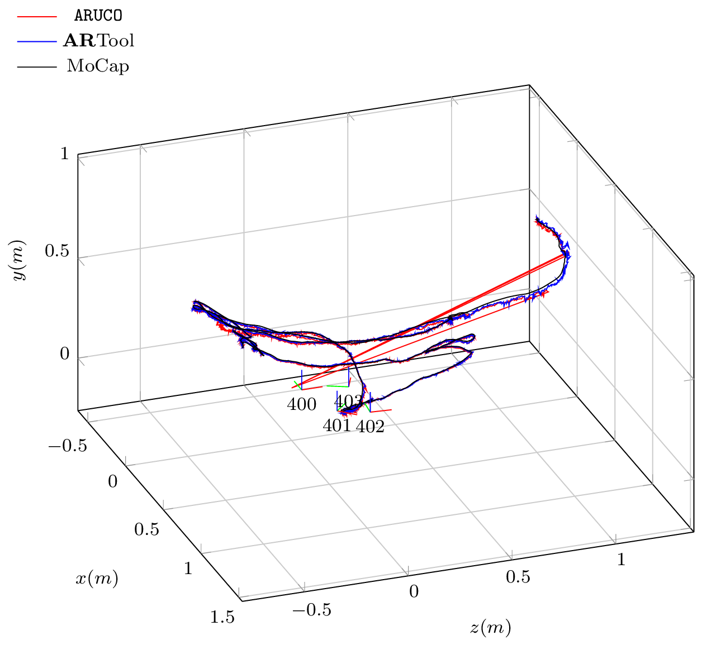
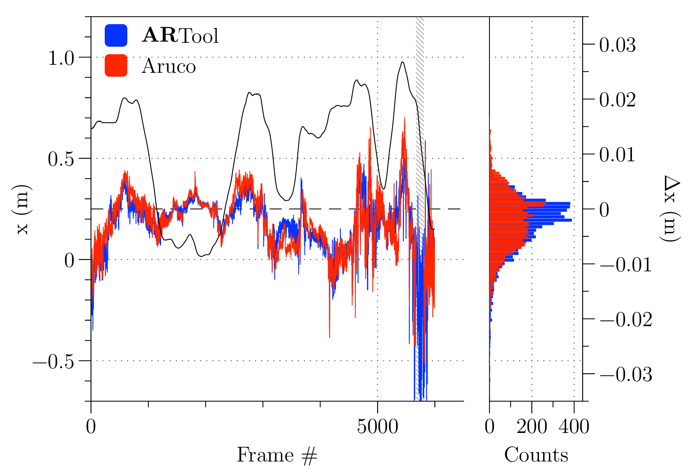
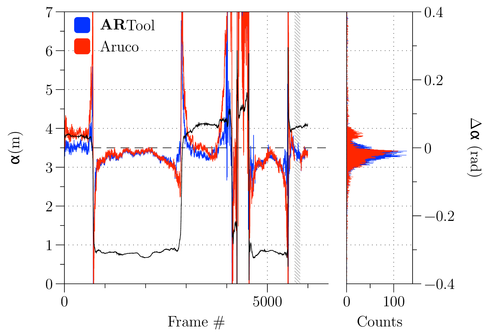
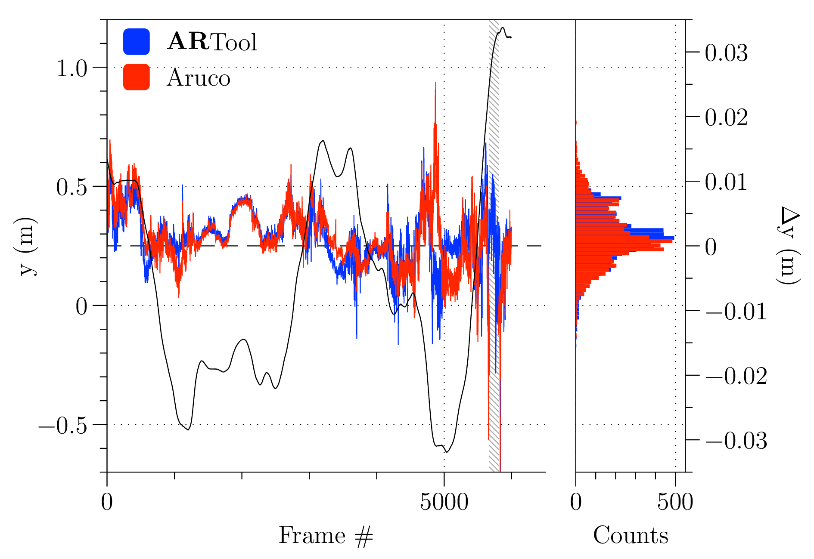
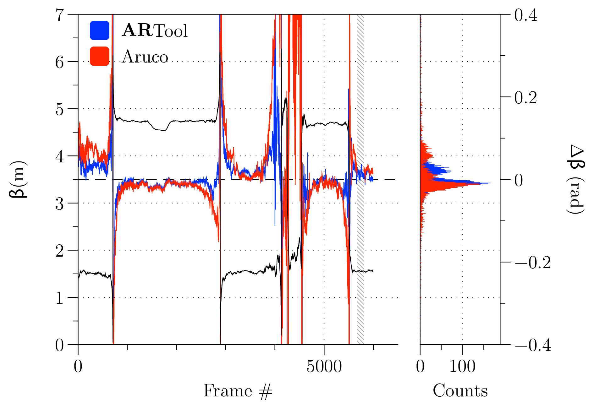
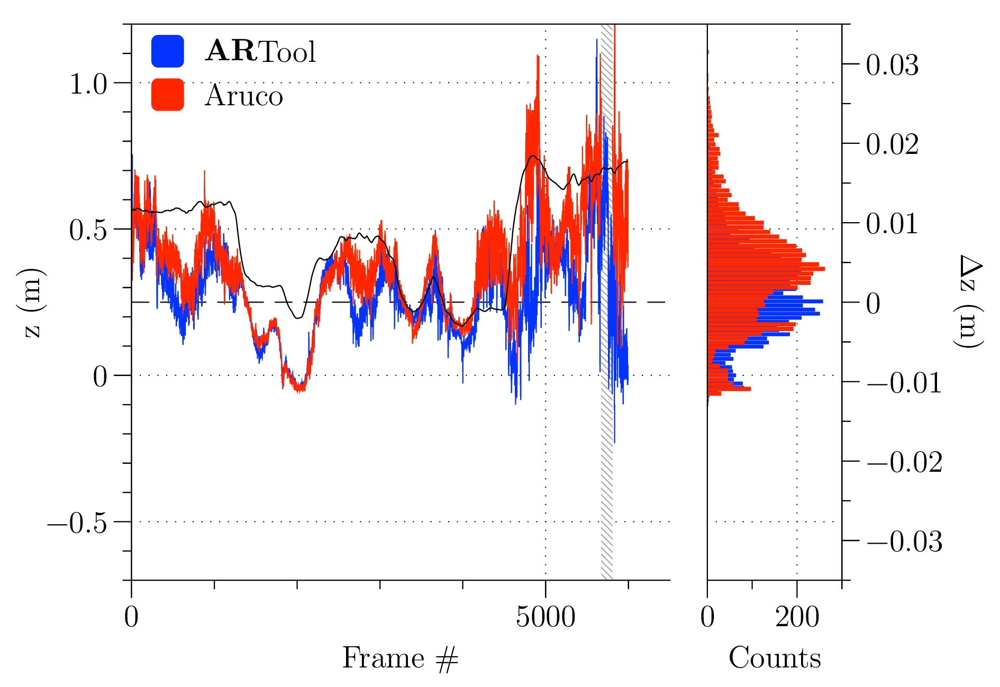
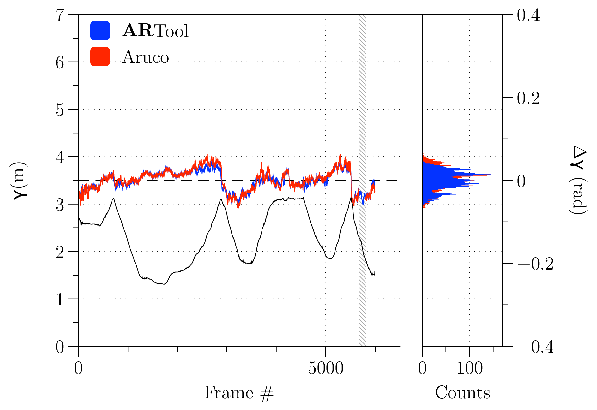

In manufacturing applications, setup and part-program verification on CNC machine tools is a time-consuming and error-prone operation, whose costs are especially relevant when dealing with small batches, custom components, and large/complex shapes. This paper presents an Augmented Reality application aimed at supporting machine tool operators in setting up the machining process, simplifying and quickening the identification of setup errors and misalignments.
The paper firstly discusses the system architecture and its implementation, then presents a set of benchmark tests assessing system accuracy and reliability in ego-localization against an open-source AR library and an optical multistereoscopic motion capture ground-truth. Finally, the effectiveness of the proposed solution on the typical part-program setup workflow is assessed by comparison with a standard in-air part-program execution and evaluated by means of a NASA TLX test campaign.
In the analysis of machining operation economics, several factors have to be considered for an efficient process. Different costs authorities are involved in the creation of a single final component, and not all of them are relative to the actual machining operation. Indeed, the total cost per part is obtained by considering: a. machining cost (e.g. effective operation, maintenance, man-hours), b. cost for setup machining (e.g. mounting cutters, setting fixtures, testing part-program), c. cost of loading and unloading, and d. tooling costs (Gilbert 1950; Kalpakjian, Schmid, and Kok 2008).
There is a direct correlation between time and machining costs. Thus, optimizing the process it is fundamental to reduce inactivity due to maintenance and setup time, in particular when human operators are in charge of loading and fixing the workpiece, which is typically the case for small lot productions and for shopfloors with limited automation.
This paper introduces the ARTool platform, that exploits Augmented Reality (AR) and Virtual Reality (VR) to reduce non-productive time due to fixing of blank workpiece in the working area and to the whole machining setup in general. When workpiece fixturing is performed by operators, errors may arise. In this case to and for avoiding catastrophic collisions, in air-tests—e.g. with tool away from workpiece—are performed to verify the setup.
The proposed application uses states and references provided by the machine tool computer numerical controller (CNC) to render a simulation of the workpiece blank, the fixtures, the machine components, and their movements within the working area. This rendered 3-D simulation is overimposed to a realtime camera capture of the same scene, matching the camera and simulation reference frames. The resulting Augmented Reality view allows the operator to quickly and effectively check for collisions and fixing errors, that become visually evident. When this setup is implemented on a personal device—e.g. tablet, smartphone or even HMD—it allows to check the real system from different angles, which is the main benefit in augmented human-machine interfaces.
The same technology is also used to implement a set of related functionalities, such as interactive manuals and schematics, thus reducing inactivity time due to maintenance, even in the case of inexperienced operators.
During Hannover Messe 2010, the Deutsche Forschungszentrum für Künstliche Intelligenz conducted a survey that revealed the strong interest of companies in the application of AR technologies for industrial purpose. In particular, of the 54 industrial representatives that were interviewed envisioned the use of AR applications in their production line (Schaumlöffel et al. 2011).
Looking at recent literature, there is evidence of significant efforts related to such technology, both from technological and cognitive point of view. In (X. Wang, Love, et al. 2013), the Building Information Modeling (BIM) is enlarged in such a way to accommodate all the informational aspects of augmented reality to better model a building lifecycle, from construction to disposal. This is not a mere informational improvement: in fact, from a cognitive workload perspective (Hou et al. 2013), operators will also benefit from the use of new instruments based on augmentation. Different papers address implementations of such techniques for different industrial and educational applications (Novak-Marcincin, Barna, et al. 2013), however many of them may be referred as proof-of-concept prototypes, more than proof-of-benefit ones (X. Wang, Kim, et al. 2013).
Different works introduced the application of AR in manufacturing, and some applications are reported in this introduction, whilst conceptual works are mainly resumed in (Ong and Nee 2013; Ma et al. 2011).
AR and VR may be employed as constructive instruments (Fiorentino et al. 2014; Di Gironimo, Mozzillo, and Tarallo 2013), and final products are structured information that will be used for educational purpose or as support for multimedia manuals. Implementations are mainly desktop setups. The same concepts influenced new way of teaching civil engineering, using tabletops (Dong et al. 2013).
Papers (Hou et al. 2013; Wang, Ong, and Nee 2013) present first implementation of virtual assembly interfaces. Cameras are used to detect position of operator hands, that are the Human Computer Interface (HCI) for the augmented renderer. Systems are desktop static prototypes, but usability is validated with respect to non–augmented real–case–scenario. Evidence of cognitive workload reduction for the operator are underlined, as also reduced time to complete tasks and reduced mean error rate.
In (Novak-Marcincin, Janak, et al. 2013), AR is employed in programming robotic manipulators. Scene is displayed on a semi reflective glass, and parallax error is corrected by tracking the observer’s gaze. The setup consists in a static desktop solution, that does not allow to benefit from the superposition of the rendered object from a different point-of-view. This is one of the first works that presented a real prototype aimed at helping in industrial process setup. Other applications focused instead on active maintenance, using OCR (Optical Character Recognition) in combination with localization markers (Martínez, Laukkanen, and Mattila 2013), but real benefits of such implementations to users were not assessed. In (Wójcicki 2014), it is worth noting the use of handheld devices, with respect to the typical static desktop setups seen in previous works.
In (Bondrea and Petruse 2013), AR technology is introduced in production line to facilitate industrial development. An application for quality assurance and quality control is showed, as constitutive part in a mock-up for a real assembly line. Even if all applications recognize the importance of authoring tools, this is something unimplemented or not mentioned at all.
In section [sec:description], concept design of the ARTool platform will be described with a top–down approach: starting from a general overview, implementations of the single aspects and their motivations are analyzed. In section [library-benchmarking], a benchmark for original and proprietary marker detection library ARSceneDetector , is performed against the well known ARUCO library (Munoz-Salinas 2012). Finally, in section [sec:cognitive], an assessment of usability of ARTool for collision detection is reported.
ARTool is a platform for reducing costs related to process setup and maintenance time of machining processes performed on CNC machine tools. The two scenarios in which ARTool proves more effective are:
reducing the setup time (e.g. testing of new part-program) and fixture time (e.g. fixturing of a new bulk into working area and checking for fixtures positions and undesired collisions);
reducing the maintenance time by supporting failure diagnosis and discovery, remote and assisted maintenance, and ticketing for technical support and rapid spare parts supply.
As outlined in Fig. [fig:general-overview], the information flow involves a set of nodes: authoring tools, storage and distribution of machine state and diagnostics, shopfloor systems (machines and operators personal devices), and Internet-connected services provided by the machine tool manufacturer.
General overview and information flow
There are two agents mainly responsible for the authoring of information: the machine tool manufacturer and the shopfloor technical office. The machine manufacturer feeds all the information necessary for system description and diagnostics in the machine PLM (Product Lifecycle Management) database. Such data may be directly integrated at CAD level, using plugins for common CAE environments (Systems 2016; PTC Inc. 2016), that generalize actual tools to accomodate AR data. The second agent is the shopfloor technical office, which is responsible for mantaining the database of tooling and machine elements that will be projected in AR. Also, this agent may insert custom maintenance data, workpiece and fixtures geometries.
Machine manufacturers shall use a CDN (content delivery network) to deploy up-to-date versions of machine manuals, run a web store for spare parts, and provide a ticketing web interface to allow users to request advanced technical support. In such a way, ARTool opens new communication channels between user and vendor, and guarantees new marketing opportunities for machine producers.
The machine tool/shopfloor network incorporates a SCADA (Supervisory Control And Data Acquisition) server for assets data centralization, query of machines states and diagnostics, and distribution of the localized information to user device. The SCADA also acts as a gateway and is responsible for the local deployment of updated diagnostics information coming from manufacturer to machines. The latter task is necessary given that shop floor networks are normally isolated from the Internet.
Each CNC machine is equipped with a client—either an embedded system or a software service—that reports machine state, simulated part-program hooks, reference systems table, tools table and diagnostic information to SCADA server.
Finally, shop floor operators are equipped with tablet systems providing the most preminent functionality of the whole ARTool system. As for now, tablet computers are the more reliable and low-cost system equipped with sensors (camera and accelerometer) that are sufficient for accurate ego-localization with respect to the surrounding environment.
User devices are systems capable of performing ego-localization thanks to embedded camera and IMU. Localization is performed in indoor environment. Due to strict precision requirements in placing assets, the algorithm uses external markers to provide localization with the necessary accuracy and precision. Markers guarantee to the system the ability to identify a scene (cfr. description of scene in section [library-benchmarking]).
Scene identification is used to perform a contextualized query to the SCADA system, and then the scene is populated using the ego-localization transformation matrix. Following this procedure, when in setup mode, ARTool is able to present the machine tool operator with the following information:
bulk model and possibly fixtures models;
spindle head and tool—or even mechanical axes simulacra—with respect to simulated trajectory;
reference systems;
the complete toolpath;
distances between markers and location of markers w.r.t. the active reference frame;
subsidiary text and element description.
Figures [fig:artool_screenshot] and [fig:images_IMG_1545] show a screenshot of the ARTool iPad app and of the same app when used by a machine tool operator in setting up a machining program.
Screenshot of ARTool iPad app, showing the setup-mode augmented reality view. In this case, three markers are used for measuring distances, while the central one provides ego-localization to the device camera and its position provides the reference for rendering the tool holder, the block-form, and the toolpath (as a sequence of white dots)
Moreover, when ARTool is in maintenance mode it can show:
maps for machine failure localization;
informative geometry—e.g. arrows and other geometric primitives to emphasize a region of interest;
manual pages;
contextual web pages of machine constructor and ticketing service.
The ARTool client application runs on Apple iPad 2 Air tablet, with iOS 9.3 operating system, and it is written in Swift, Objective-C and C++ languages. Rendering task are performed using the Apple-provided system framework SceneKit (Apple Inc. 2016).
The main functionality of SCADA are the deployment of assets to final users, and the quering the machine tool controller for the following information:
machine state: axes positions, active reference system, active tool and loaded part-program;
interpolated axes movement: each machine has its own part-program parser and interpolator; the result of interpolator are tool trajectories described by points sampled with with a typical frequency (), that will be used by ARTool to render the position of tool, spindle, and axes envelopes/simulacra;
tables of reference systems and tool list, that are used to load solid models of tools and to render their simulacra within the AR view with respect to correct origins;
diagnostic information are finally displayed on devices for guiding and assisting operators in identifing failure causes and solutions.
SCADA is also used to serve web app and libraries for authoring internal maintenance procedures—e.g. marker library is used inside the server to provide marker identification from static images. The CDN is able to distribute assets and transformation matrices with respect to a reference marker.
In our prototyping setup, the server is a software written in Ruby and C++, while database is made by a set of YAML files, to ease up inspection and debugging. The server also provides an HTML5 authoring web application.
A machine tool operator using ARTool for checking a part-program
It is evident that a precise and reliable realtime ego-localization of user point-of-view with respect to environment is a critical aspect for the application. During the early development stage, ARTool used ARUCO library, which is bundled in the OpenCV (Bradski and others 2000) framework, for markers detection and localization. That framework was selected after comparison with the ArtoolKit (Kato 2002) platform, after realizing that the former provided better efficiency and responsiveness, although at the price of a lower accuracy.
Later on in the ARTool development, and in order to improve both efficiency and accuracy, the ARSceneDetector library has been developed from scratch. In this section, the ARSceneDetector library is introduced and its performance is evaluated in terms of computational efficiency and ego-localization accuracy.
It is worth noting that in order to reach the precision required to get reliable positioning and representation of virtual assets overlaid on the camera image while maintaining realtime capabilities, the library is making use of hardware acceleration and architecture specific instructions, and its performance is thus platform-dependent.
ARSceneDetector library structureLibrary structure. ARSD stands for ARSceneDetector . In gray, plugins that are disabled during benchmark
The ARSceneDetector library is composed of three main layers: a. information gathering, the top layer, is written in Swift to use latest advances available for the iPad/iOS platform; b. information processing written in C++ for compatibility with OpenCV framework; c. scene reconstructor, a simple classifier that extracts the structure of the scene from marker relative position and orientation. As for now, due to some limitations in language interfacing, an Objective-C++ glue-code bridge between Swift and C++ layers allows information passing. A schematic is presented in Fig. [fig:markerlib].
The ARSceneDetector library is initialized by setting up camera matrix parameters (Hartley and Zisserman 2003), threshold values for marker recognition, and other algorithms flags. It has to be remarked that threshold values are typically calibrated by automatic procedures that measures light values in standard operating conditions. All those data are saved in a configuration file, and are specific for the single device.
Camera frames are retrieved at 720p or 1080p. Selecting different resolutions affects ego-localization frequency—from to respectively. Each captured frame goes through an image enhancement and edge detection algorithm, performed in GPU.
Simultaneously, inertial measurements are retrieved from the IMU device. Those information are used to stabilize (Bleser and Stricker 2009) the view of final rendered assets overlaid on the camera image. The scene information is coordinated across devices by the SCADA server. Crossing the Objective-C++ glue-code bridge, scene and IMU data are stored in container classes and passed to a marker geometry detection algorithm. Each camera frame is elaborated for extracting square convex shapes that may be a candidate for a marker. The ARSD Tracker is a plugin to the standard, one-frame-at-a-time algorithm that also integrates results from the previously elaborated frame, in order to reduce the image area where to search for square shapes, thus reducing the computation time. When the plugin is enabled, the algorithm maintains awareness of marker positions (which are updated at every frame), while the search of new markers by scanning the whole camera image is performed at a reduced frequency (configurable, typically every 10 frames). When possible, platform-dependent Single Instruction Multiple Data (SIMD) operations are used for improving computational efficiency. Finally inertial measurements, when available, are used to improve the capabilities of localization and filtering vibrations in rendering.
When square shapes are identified, their pose is estimated using the camera matrix specified in configuration. Actually, different algorithms for pose estimation are implemented and currently under testing, such as (Lowe 1991; Schweighofer and Pinz 2006). Each marker gets associated with a transformation matrix, with respect to the camera point of view. Those information are used to enrich the General Scene Container structure, used by the tracker.
Finally, the identified scene is reconstructed in the very last layer of the library. In this context, a scene is a combination of structured markers, joined together to achieve better accuracy in ego-localization. In particular, a scene can be represented by:
a simple single marker;
a board of co-planar markers, with parallel \(\hat{z}\) axes;
a board of markers, with parallel \(\hat{z}\) axes, and known, non-zero offset in \(\hat{z}\) direction;
a board of three markers with mutually orthogonal \(\hat{z}\) axes, with known offset vectors;
a solid cube of markers.
Markers can contain a numeric binary code, like the one encoded by ARUCO, or an image. The use of images requires a more demanding classification algorithm, and is consequently used more rarely.
Usually, the SCADA server is responsible to provide scene definitions, but the library is also able to build a new scene dynamically by chaining transformations between a known marker and a new unknown/unexpected one. This feature is important if the user wants to extend rendered space to a volume in which no markers are currently visible. Marker chains can be created by framing with the camera of one or more new markers. It is evident that the positioning uncertainty of every marker added to the chain is proportional to the chain length, i.e. to the number of markers separating the newly added one from the last marker whose position is known by the server.
Once the scene is reconstructed, the General Scene Container is passed to renderer, which in turn overlays the virtual assets on the captured frame.
Performance of ARTool library has been benchmarked againts the well-known ARUCO library. The parameters under testing were:
computational time;
reliability in marker identification;
accuracy in ego-localization.
While the first two index are relative, the third one is absolute, assuming the reference ground-truth provided by a motion capture (MoCap) system (OptiTrack, equipped with Prime13 cameras running at ). The same video was recorded from an iPad at , while a set of MoCap markers were attached to the iPad so that the iPad absolute position could be tracked and recorded by the MoCap during the test. The video clip was then fed to the two algorithms for benchmarking. Ego-localization results were synchronized to motion capture recordings by minimizing the variance of their differences with respect to signal shift in time. In more detail, given the signals:
\(x_{0}(k)\) the \(x\) coordinate returned by the motion capture at frame \(k\)
\(x_{A}(k)\) the \(x\) coordinate returned by the ARTool library at frame \(k\)
\(x_{B}(k)\) the \(x\) coordinate returned by the ARUCO library at frame \(k\)
the distance \(\varepsilon_{x}(k,s)\) is evaluated as: \[\varepsilon_{x}(k,s) = 2x_{0}(k) - \left( (x_{A}(k+s) + x_{B}(k+s) \right)\] while the variance \(\nu_{x}(s)\) with respect to the shift \(s\) on the \(x\) signal is obtained as: \[\nu_{x}(s) = E\left[ \varepsilon_{x}(k,s) - E\left[\varepsilon_{x}(k,s) \right] \right]\]
Consequently, the time-shift to be used for aligning the signals is the result of: \[s^{*} = \underset{s}{\mathrm{arg}}\,\mathrm{min}\sum_{i=\left\{x,y,z\right\}}{\nu_{i}(s)}\] Position signal are used because more reliable with respect to the others.
To make a fair comparison, some plugins of ARTool library are disabled, and are highlighted in gray in Fig. [fig:markerlib]. In this way, the performance of the ARTool library is significantly degraded w.r.t. its optimal configuration, but the resulting differences to ARUCO are only due to the algorithms and their implementation rather than to different input data processing/filtering.
 [fig:pos-3d]
     
Setup parameters for both libraries were tuned to get the best possible results as a compromise between accuracy and reliability. In Fig. [fig:pos-3d], the benchmark trajectory is presented, with the positions of the markers in the scene. Some jumps are evident for the ARUCO library, and are due to unstability in the identification of the markers pose estimation. Note that between frames , ARUCO loses the position, and the resultant trajectory is a linear interpolation a posteriori between the last known state and the new one. This lack in identification explains the difference in accuracy reported in Tab. [tab:time-results].
| ARTool | ARUCO |
|
|---|---|---|
| Speed | ||
| Reliability | () | () |
ARTool library appears more reliable, never loosing ego-localization and showing a higher success rate in identifying markers. In Fig. [fig:error-analysis] the accuracy of the two libraries is also assessed. The charts show the nominal path as a black line as measured by the motion capture (in position on the left column, angles on the right one), while red and blue traces represent the errors, relative to the ground-truth, of values calculated by the ARTool and ARUCO library, respectively, whose vertical axis is on the right side. To the right of each chart a histogram reports the distribution of errors. It is interesting to notice that, for what concerns positions, the error distributions of ARTool appear to have a mode closer to zero and a narrower distribution, as reported in Tab. [tab:error-table].
| \(\mu\) | \(\sigma\) | \(k\) | \(\mu\) | \(\sigma\) | \(k\) | |
| \(x\quad(\si{mm})\) | ||||||
| \(y\quad(\si{mm})\) | ||||||
| \(z\quad(\si{mm})\) | ||||||
| \(\alpha\quad(\si{rad})\) | ||||||
| \(\beta\quad(\si{rad})\) | ||||||
| \(\gamma\quad(\si{rad})\) |
Regarding attitude estimation, even if the figures in Tab. [tab:error-table] suggest a better precision for ARTool, it appears evident from the top and central right histograms of Fig. [fig:error-analysis] that an error in both directions with respect to zero means hides a systematic error in attitude identification.
To assess the advantages provided by such a new instrument to shopfloor operators, efficiency and impact on users workload has to be investigated. This section deals with the examination of the cognitive potentials of the proposed AR tool for part-program evaluation.
The main hypotheses here taken into account were:
compared to the common inspection method through in-air test of a new part-program (i.e. safe execution of part-program at an offset above the workpiece along the tool axis), the AR application reduces the number of errors in detecting collisions and misalignments;
compared to the common inspection method through in-air test of a new part-program, the AR application reduces the time needed for detecting collisions and misalignments;
by using the AR application for detecting collisions, the operative workload on user with respect to normal in-air test inspection is reduced.
Hypothesis inference is made through experimental design, in which 24 participants aging from , mostly male (Collins and Kimura 1997), with instruction level between B.Sc. and M.Sc. and with no deficits in spatial capabilities, have to identify the position of any possible collision between tool and other objects in the milling machine work area, while the procedure time is recorded.
The experimental task is to identify the position of collisions in a 5-axis milling machine (Deckel Maho DMU 60-T), between a cylindrical milling cutter and any other object, including workpiece. The identification is divided in two distinct procedures, proposed to participants according to a random sequence.
Identify the presence of evident collisions—e.g. at least , half tool diameter—through observation of in-air execution of the part-program. Vertical offset is set to . participant can slow down, stop, or accelerate tool motion through the feed-rate override command on machine tool controller. Inversion of motion is not possible, but repetitions can be performed on request. The procedure is timed, and the participant is instructed to try and perform it as quickly as possible. The time needed for auxiliary machine operations—e.g. tool change and rapid movements—is not recorded.
Identify presence of evident collisions by using an ARTool -equipped iPad. Users can control position of the simulated spindle head and tool using an on-screen slider. The application also renders the finished part simulacrum and the complete trajectory as a dotted trace. The user can freely move and orient the device around the workpiece. Spatially, simulated bulk and real bulk are overlapped. The procedure is timed, and has to be performed as quickly as possible.
On completion of all the tasks, participants are asked to take a RAW NASA TLX survey. The RAW test is a modified version in which user evaluation is not scaled, and its use is suggested in the identification of cognitive workload with respect to the standard scaled test, when low physical workload is required (Hart 2006).
Three different part-program trajectories were proposed to participants during testing, and are described in Fig. [fig:part-program]:
is a correct execution with no errors;
there is a collision in corner D, along \(\hat{x}\) axis, simulating a wrong definition for a variable in the part-program;
there is a collision through the whole trajectory, along \(\hat{z}\) axis, simulating a wrong zero definition.
A collision may be located in one of the eight cardinal points of the \(\hat{x}\times\hat{y}\) plane, in any arbitrary direction. Part-programs are identical on milling machine and on ARTool device, but those trajectories are provided randomly to each participant, thus, in-air and AR trajectory can be different.
Visualization of the three test part-programs. Test 1 is without collisions, while test 2 contains a collision in \(\hat{x}\) direction, and test 3 collide through the whole trajectory due to a \(\hat{z}\) shift
For what concerns the hypothesis H.1, test results are quite evident. None of the participants made a complete correct collision forecast with the simple observation of the in-air part-program. Conversely, by using the ARTool device participants correctly identified collisions. This is an noteworthy result for users that are unexperienced both in the use of AR and of machine tools. For what concerns the hypothesis H.2, the times required for identification of collisions in both methods are comparable. In this case it is not conceivable to reject the null hypothesis— providing a p-value of . It must be noted that timing for in-air tests only considers interpolated axes movement (G01/G02/G03), and not for rapid ones (G01), nor tool-changing axes maneuvers.
RAW NASA TLX also gives some important results regarding target self-evaluation. In fact, users were requested to answer the following questions, with a score from :
perceived mental demand,
perceived temporal demand,
required effort,
perceived performance,
frustration in performing the task.
Mean scores for RAW NASA TLX test
Each participant was required to answer the RAW NASA TLX test both for the AR task and for the in-air execution task. participants perceived AR tasks simpler to perform from a cognitive workload point-of-view. Also, frustration in performing is reduced, and perceived time request is reduced. From a cognitive workload point-of-view, this result shows an evident benefit from the introduction of ARTool in manufacturing—at least for the case of unexperienced users—increasing the self-confidence in the operation of the machine tool. Users’ mean scores are reported for reference in Fig. [fig:nasa-scores].
This paper presents a novel Augmented Reality software system for supporting operators of CNC machine tools in setting up and checking for errors in part-programs. The proposed system exploits the overlaying on the camera imaging of a portable device (an Apple iPad) of solid models and information representing the workpiece shape and position, part-program data, and the CNC setup (reference systems, toolpaths, etc.) Any mismatch between the real image and the overlaid 3-D scene is easily perceived by the user, which can thus quickly and reliably spot errors in the part-program, misalignments, and wrong placement of components in the working volume. Such improvements in speed and reliability has been experimentally verified by asking subjects (all novices in machine tool operations and in augmented reality) to check for errors in different part-programs. The results show a significant reduction in task execution time, a huge improvement in reliability, and also a significant reduction of cognitive workload to the subjects themselves.
These results have been obtained by using a custom developed system made of three components: an iOS app providing the user interface; an infrastructure of network services ensuring the synchronization and reliable matching between the CNC state and information structure and the user device; a custom library for high performance and high reliability ego-localization, named ARTool. The latter has ben benchmarked against similar solutions, and the benchmark results of the comparison between ARTool and the commonly used, state of the art ARUCO library are here proposed and discussed, showing how ARTool proves faster and more reliable when comparing the two libraries against a motion capture ground-truth.
In the near future, Authors plan to improve the functionalities provided by the network services layer, to put under testing the whole workflow from the CAD-CAM generation of the part-program to the part-program setup and verification, and finally to assess the workflow improvement of the proposed system when used by professional machine tool operators (rather than novices as in the present case). Finally, application of the same software system for supporting maintenance operation of industrial machinery (including machine tools) is currently under development.
Apple Inc. 2016. “SceneKit Framework.” https://developer.apple.com/scenekit/.
Bleser, Gabriele, and Didier Stricker. 2009. “Advanced Tracking Through Efficient Image Processing and Visual–Inertial Sensor Fusion.” Computers & Graphics 33 (1). Elsevier: 59–72.
Bondrea, Ioan, and Radu Emanuil Petruse. 2013. “Augmented Reality-an Improvement for Computer Integrated Manufacturing.” In Advanced Materials Research, 628:330–36. Trans Tech Publ.
Bradski, Gary, and others. 2000. “The Opencv Library.” Doctor Dobbs Journal 25 (11). M AND T PUBLISHING INC: 120–26.
Collins, David W, and Doreen Kimura. 1997. “A Large Sex Difference on a Two-Dimensional Mental Rotation Task.” Behavioral Neuroscience 111 (4). American Psychological Association: 845.
Di Gironimo, Giuseppe, Rocco Mozzillo, and Andrea Tarallo. 2013. “From Virtual Reality to Web-Based Multimedia Maintenance Manuals.” International Journal on Interactive Design and Manufacturing (IJIDeM) 7 (3). Springer: 183–90.
Dong, Suyang, Amir H Behzadan, Feng Chen, and Vineet R Kamat. 2013. “Collaborative Visualization of Engineering Processes Using Tabletop Augmented Reality.” Advances in Engineering Software 55. Elsevier: 45–55.
Fiorentino, Michele, Antonio E Uva, Michele Gattullo, Saverio Debernardis, and Giuseppe Monno. 2014. “Augmented Reality on Large Screen for Interactive Maintenance Instructions.” Computers in Industry 65 (2). Elsevier: 270–78.
Gilbert, WW. 1950. “Economics of Machining.” Machining Theory and Practice. American Society for Metals, Cleveland, 465–85.
Hart, Sandra G. 2006. “NASA-Task Load Index (Nasa-Tlx); 20 Years Later.” In Proceedings of the Human Factors and Ergonomics Society Annual Meeting, 50:904–8. 9. Sage Publications.
Hartley, Richard, and Andrew Zisserman. 2003. Multiple View Geometry in Computer Vision. Cambridge university press.
Hou, Lei, Xiangyu Wang, Leonhard Bernold, and Peter ED Love. 2013. “Using Animated Augmented Reality to Cognitively Guide Assembly.” Journal of Computing in Civil Engineering 27 (5). American Society of Civil Engineers: 439–51.
Kalpakjian, Serope, Steven R Schmid, and Chi-Wah Kok. 2008. Manufacturing Processes for Engineering Materials. Pearson-Prentice Hall.
Kato, Hirokazu. 2002. “ARToolKit: Library for Vision-Based Augmented Reality.” IEICE, PRMU 6: 79–86.
Lowe, David G. 1991. “Fitting Parameterized Three-Dimensional Models to Images.” IEEE Transactions on Pattern Analysis & Machine Intelligence, no. 5. IEEE: 441–50.
Ma, Dengzhe, Xiumin Fan, Jürgen Gausemeier, and Michael Grafe. 2011. Virtual Reality & Augmented Reality in Industry. Springer.
Martínez, Héctor, Seppo Laukkanen, and Jouni Mattila. 2013. “A New Hybrid Approach for Augmented Reality Maintenance in Scientific Facilities.” International Journal of Advanced Robotic Systems, Manuel Ferre, Jouni Mattila, Bruno Siciliano, Pierre Bonnal (Ed.), ISBN 1729: 8806.
Munoz-Salinas, R. 2012. “ARUCO: A Minimal Library for Augmented Reality Applications Based on Opencv.” Universidad de Córdoba.
Novak-Marcincin, Jozef, Jozef Barna, Miroslav Janak, and Ludmila Novakova-Marcincinova. 2013. “Augmented Reality Aided Manufacturing.” Procedia Computer Science 25. Elsevier: 23–31.
Novak-Marcincin, Jozef, Miroslav Janak, Veronika Fečová, and Ludmila Novakova-Marcincinova. 2013. “Utilization of Augmented Reality Elements for Visualization of Operational States of Manufacturing Devices.” In Applied Mechanics and Materials, 308:111–14. Trans Tech Publ.
Ong, Soh K, and Andrew Yeh Chris Nee. 2013. Virtual and Augmented Reality Applications in Manufacturing. Springer Science & Business Media.
PTC Inc. 2016. “Product Lifecycle Management (PLM) Software.” http://www.ptc.com/product-lifecycle-management.
Schaumlöffel, P, M Talha, D Gorecky, and G Meixner. 2011. “Augmented Reality Applications for Future Manufacturing.” Proceedings of the 5th Manufacturing Science and Education-MSE 1 (5): 2–5.
Schweighofer, Gerald, and Axel Pinz. 2006. “Robust Pose Estimation from a Planar Target.” Pattern Analysis and Machine Intelligence, IEEE Transactions on 28 (12). IEEE: 2024–30.
Systems, Dassault. 2016. “Solidworks Model Based Definitions.” http://www.solidworks.it/sw/products/technical-communication/packages.htm.
Wang, Xiangyu, Mi Jeong Kim, Peter ED Love, and Shih-Chung Kang. 2013. “Augmented Reality in Built Environment: Classification and Implications for Future Research.” Automation in Construction 32. Elsevier: 1–13.
Wang, Xiangyu, Peter ED Love, Mi Jeong Kim, Chan-Sik Park, Chun-Pong Sing, and Lei Hou. 2013. “A Conceptual Framework for Integrating Building Information Modeling with Augmented Reality.” Automation in Construction 34. Elsevier: 37–44.
Wang, ZB, SK Ong, and AYC Nee. 2013. “Augmented Reality Aided Interactive Manual Assembly Design.” The International Journal of Advanced Manufacturing Technology 69 (5-8). Springer: 1311–21.
Wójcicki, Tomasz. 2014. “Supporting the Diagnostics and the Maintenance of Technical Devices with Augmented Reality.” Diagnostyka 15 (1): 43–47.